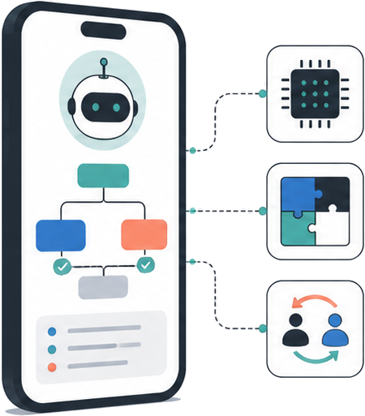
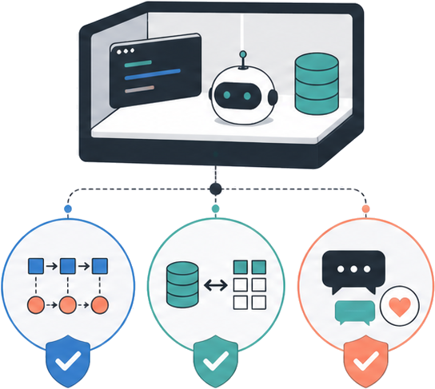
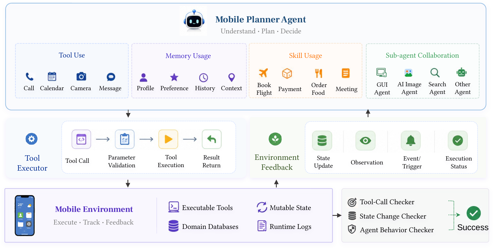
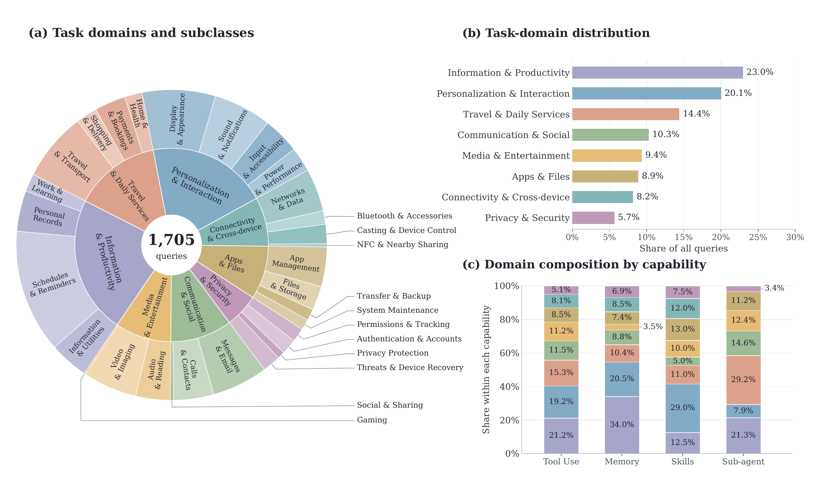

Benchmarking Mobile Planner Agents on Complex Real-World Tasks
Main results
Overall = 50% Tool Use + 20% Memory + 20% Skills + 10% Sub-agent. Scores follow the revised setting-specific success criteria. Click any column header to sort.
All values are percentages (%). Skills averages success under Skill-Only Routing and Mixed Tool-Skill Routing. Best value per column is highlighted. The table reproduces the revised paper's main results.
Benchmark overview
Mobile planning requires a central agent to coordinate tools, persistent user context, reusable procedures, and specialized sub-agents while adapting to execution feedback. MobilePA-Bench evaluates these abilities through 1,705 distinct queries, eight descriptive query domains, and 212 mobile tools in a shared stateful simulated environment. Its unified protocol covers Tool Use, Memory Usage, Skill Usage, and Sub-agent Collaboration. Each query receives a fixed Tool Call, State Change, or Agent Behavior checker, while capability gates enforce applicable memory and skill-routing requirements. This separates successful task completion from compliance with prescribed resource and procedural requirements, exposing failure stages that aggregate success alone cannot diagnose.

Interactive benchmark replay
From user intent to mobile execution and evidence-based evaluation.
Illustrative public examples; hidden evaluation tasks and ground truth remain private.
Representative examples show how user requests, model actions, and environment feedback unfold across the four capability dimensions.
Distinct queries, scored trajectories, capability balance, and mobile action coverage.
1,705 distinct queries produce 1,905 scored trajectories per model because each of the 200 Skill queries is evaluated under both SOR and MTSR.

The stateful environment exposes 212 executable APIs across 13 tool domains. This tool taxonomy organizes action interfaces and is distinct from the query coverage taxonomy above.
| Tool Domain | #Tools |
|---|---|
| Audio & Entertainment | 25 |
| Apps & Storage | 23 |
| Display & Sound | 22 |
| System Settings | 22 |
| Time Management | 16 |
| AI Assistant | 16 |
| Calls & Communication | 15 |
| Network & Connectivity | 14 |
| Travel & Lifestyle | 13 |
| Devices & Cross-device | 13 |
| Input & Interaction | 12 |
| Utilities & Productivity | 11 |
| Security & Privacy | 10 |
Non-Skill tasks expose 15 candidate tools. Skill-Only Routing exposes 20 candidate skills without direct business tools; Mixed Tool-Skill Routing exposes 15 direct tools plus five candidate skills. Every trajectory runs for at most 15 steps. Missing or invalid predictions count as failures, and API-judged outcomes require a unanimous decision from two fixed judges.
If you find MobilePA-Bench useful, please consider citing:
@article{mobilepabench2026,
title = {MobilePA-Bench: Benchmarking Mobile Planner Agents on Complex Real-World Tasks},
author = {Zhu, Yi and Wu, Xiongwei and Wang, Qiyi and Qu, Tingyu and Liu, Jiajun and Cao, Sihan and Chen, Long and Sun, Weigao and Zhu, Feida and Zhong, Yiran and Hoi, Steven},
journal = {arXiv preprint arXiv:2608.23035},
year = {2026}
}